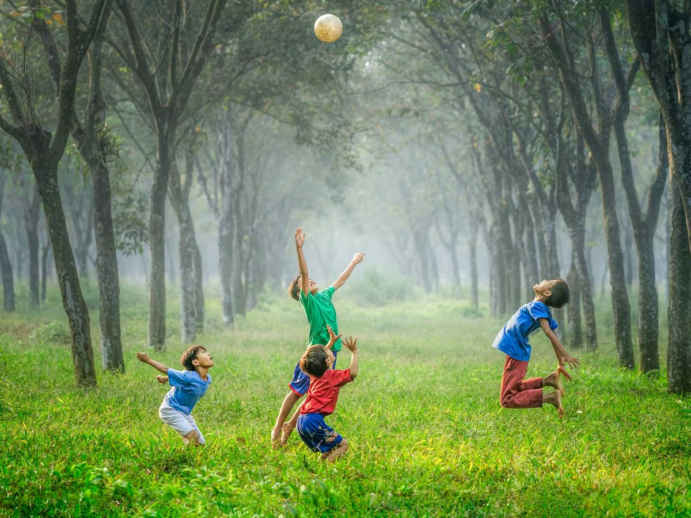

EXTRA CURRICULAR ACTIVITIES

This is the last random sentence I will be writing and I am going to stop mid-sent
This is the last random sentence I will be writing and I am going to stop mid-sent
Whats interesting about it?
Extracurricular activities offer a range of benefits and interesting aspects that go beyond academic learning. Here are some compelling reasons why they’re valuable:
- Learn New Skills: You can pick up useful skills like teamwork, leadership, and time management.
- Personal Growth: They boost your confidence and help you explore your interests and talents
- Make Friends: You meet people with similar interests and build new friendships.
- Explore Interests: Try out hobbies and activities you might not do in school, like sports, music, or art.
- Career Insights: Gain experience that helps you discover and prepare for future jobs.
- Improve Academics: Being involved can help you do better in school by teaching you discipline and focus.
- Stress Relief: Activities can be a fun way to unwind and balance school pressures.
- Help Others: Volunteering and community service teach you to contribute to your community.
- Broaden Perspectives: Experience different cultures and viewpoints.
- Boost Your Resume: They make your resume and college applications stand out.
Overall, extracurriculars make your school experience richer and more enjoyable!